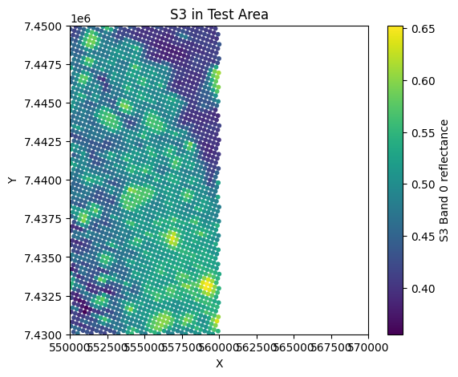
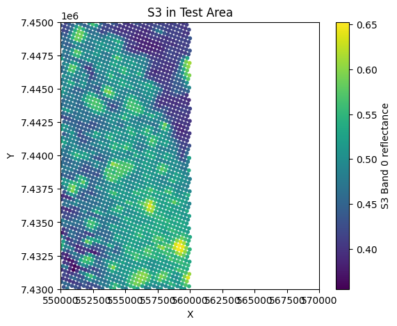
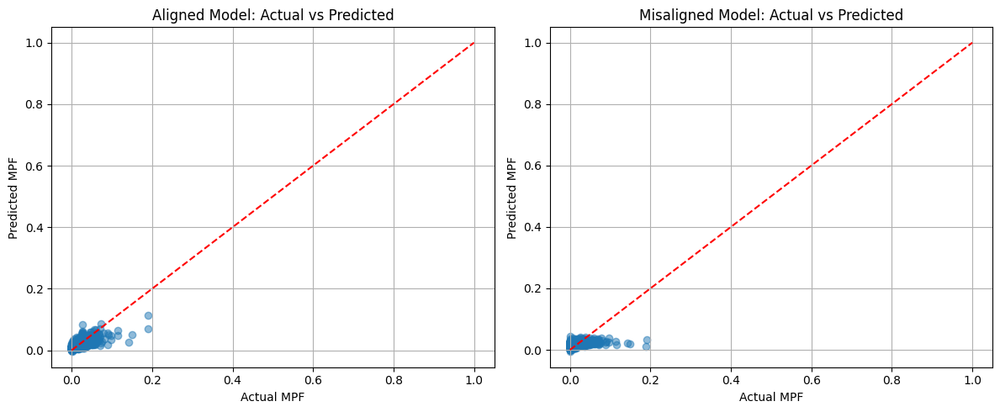
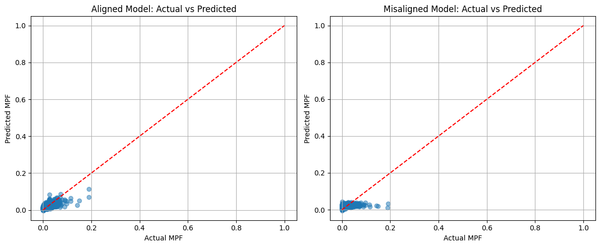

Regression Application on Melt Pond Fractions (MPF)#
This notebook applies regression models to predict Melt Pond Fraction (MPF) using co-located Sentinel-2 (S2) and Sentinel-3 (S3) data. The aim is to evaluate the impact of spatial alignment between S2 and S3 data on model performance.
The notebook uses two training datasets:
Aligned training data: S3 coordinates corrected using ECC-based alignment.
Misaligned training data: S3 coordinates with a known artificial shift applied.
A separate test area is selected to evaluate generalization performance.
Workflow Overview#
Load Training and Test Data#
Loads pre-processed aligned and misaligned training datasets.
Loads test data (from a different area).
Applies feature scaling to ensure all models work on normalized data.
Polynomial Regression Models#
Trains polynomial regression (degree 2) models using both aligned and misaligned data.
Makes MPF predictions on the test set.
Evaluates performance using Mean Squared Error (MSE) and R².
Visualizes:
Predicted MPF maps across the test area.
Actual vs. predicted MPF scatter plots.
Neural Network Models#
Trains identical feedforward neural networks (same architecture) on both aligned and misaligned data.
Makes MPF predictions on the test set.
Evaluates and visualizes results, similar to polynomial models.
Gaussian Process Regression Models#
Applies Sparse Gaussian Process Regression (GPR) for efficient modeling on larger datasets.
Trains models separately for aligned and misaligned data.
Generates MPF predictions and visualizations.
Uses subsampling techniques to make GPR computationally feasible.
Summary and Model Comparison#
Combines performance metrics (MSE, R²) for all models.
Calculates the percentage improvement from alignment for each model type.
Produces summary bar plots comparing performance across all models and alignment settings.
Key Objective#
This notebook directly quantifies the benefit of spatial alignment (correcting for sea ice drift and sensor mismatch) on MPF prediction accuracy, providing insight into how critical precise co-location is for multi-sensor fusion in polar remote sensing.
Test Data Preparation & Data Loading#
Cell 1: Extract Test Data from a New Sub-Subarea#
Loads Sentinel-2 (S2), Sentinel-3 (S3), and Melt Pond Fraction (MPF) data.
Defines a new test sub-subarea distinct from the training area.
Filters S2, S3, and MPF data to match this new area.
Uses KDTree to associate S2 pixels with their nearest S3 pixels.
Computes the mean MPF for each S3 pixel, effectively mapping MPF onto the S3 grid.
Visualises S2 reflectance, MPF, and S3 reflectance in the test area.
Saves the resulting test dataset for use in model evaluation.
Cell 2: Load and Prepare Training and Test Data#
Loads:
Aligned training data (after ECC correction)
Misaligned training data (with manually applied shift)
Test data (extracted in the previous cell)
Separately scales features for:
Aligned training and test data.
Misaligned training and test data.
Prepares normalized input features (
X) and target MPF (y) for both aligned and misaligned cases.Displays the number of training and test samples for both scenarios.
import numpy as np
import matplotlib.pyplot as plt
from scipy.spatial import KDTree
from collections import defaultdict
# 1) Load zoomed S2, S3, MPF data
save_path = '/content/drive/MyDrive/GEOL0069/2324/Week 6 2025'
s2_data = np.load(save_path + '/s2_zoomed_data.npz')
s3_data = np.load(save_path + '/s3_zoomed_data.npz')
mpf_data = np.load(save_path + '/mpf_zoomed_data.npz')
# 2) Extract arrays
s2_x_all, s2_y_all = s2_data['x'], s2_data['y']
band_s2_all = s2_data['band_data']
mpf_all = mpf_data['mpf']
s3_x_all, s3_y_all = s3_data['x'], s3_data['y']
band_s3_all = s3_data['reflectance']
# 3) Define a test sub-subarea (different from training area)
test_x_min, test_x_max = 550000.0, 570000.0
test_y_min, test_y_max = 7430000.0, 7450000.0
# Filter S2 & MPF
cond_s2_test = (
(s2_x_all >= test_x_min) & (s2_x_all <= test_x_max) &
(s2_y_all >= test_y_min) & (s2_y_all <= test_y_max)
)
s2_x = s2_x_all[cond_s2_test]
s2_y = s2_y_all[cond_s2_test]
band_s2 = band_s2_all[cond_s2_test]
mpf_vals = mpf_all[cond_s2_test]
# Filter S3
cond_s3_test = (
(s3_x_all >= test_x_min) & (s3_x_all <= test_x_max) &
(s3_y_all >= test_y_min) & (s3_y_all <= test_y_max)
)
s3_x = s3_x_all[cond_s3_test]
s3_y = s3_y_all[cond_s3_test]
band_s3 = band_s3_all[cond_s3_test]
print(f"S2 points in test area: {len(s2_x)}")
print(f"S3 points in test area: {len(s3_x)}")
# 4) PLOT S2, MPF, and S3 in test area
plt.figure(figsize=(6,5))
plt.scatter(s2_x, s2_y, c=band_s2[:, 0]/10000.0, cmap='viridis', s=1)
plt.colorbar(label='S2 Band 0 reflectance')
plt.title('S2 in Test Area')
plt.xlabel('X'); plt.ylabel('Y')
plt.xlim(test_x_min, test_x_max)
plt.ylim(test_y_min, test_y_max)
plt.show()
plt.figure(figsize=(6,5))
plt.scatter(s2_x, s2_y, c=mpf_vals, cmap='coolwarm', s=1)
plt.colorbar(label='MPF')
plt.title('MPF in Test Area (same coords as S2)')
plt.xlabel('X'); plt.ylabel('Y')
plt.xlim(test_x_min, test_x_max)
plt.ylim(test_y_min, test_y_max)
plt.show()
plt.figure(figsize=(6,5))
plt.scatter(s3_x, s3_y, c=band_s3[:, 0], cmap='viridis', s=10)
plt.colorbar(label='S3 Band 0 reflectance')
plt.title('S3 in Test Area')
plt.xlabel('X'); plt.ylabel('Y')
plt.xlim(test_x_min, test_x_max)
plt.ylim(test_y_min, test_y_max)
plt.show()
# 5) Use KDTree to associate S2 -> S3
s2_points = np.vstack((s2_x, s2_y)).T
s3_points = np.vstack((s3_x, s3_y)).T
tree = KDTree(s3_points)
distances, s3_idx_for_s2 = tree.query(s2_points)
# 6) Group S2 indices by S3 index
grouped = defaultdict(list)
for s2_idx, s3_idx in enumerate(s3_idx_for_s2):
grouped[s3_idx].append(s2_idx)
# 7) Compute mean MPF for each S3 pixel
mpf_avg = np.full(len(s3_points), np.nan)
for s3_i, s2_list in grouped.items():
mpf_for_this_s3 = mpf_vals[s2_list]
if np.any(~np.isnan(mpf_for_this_s3)):
mpf_avg[s3_i] = np.nanmean(mpf_for_this_s3)
# 8) Remove NaNs
valid_s3 = ~np.isnan(mpf_avg)
s3_x_clean = s3_x[valid_s3]
s3_y_clean = s3_y[valid_s3]
band_s3_clean = band_s3[valid_s3]
mpf_clean = mpf_avg[valid_s3]
# 9) Plot the S3-located MPF distribution
plt.figure(figsize=(6,5))
plt.scatter(s3_x_clean, s3_y_clean, c=mpf_clean, cmap='coolwarm', s=35,vmin=0,vmax=0.018)
plt.colorbar(label='Mean MPF')
plt.title('MPF mapped to S3 coords in Test Area')
plt.xlabel('X'); plt.ylabel('Y')
plt.xlim(test_x_min, test_x_max)
plt.ylim(test_y_min, test_y_max)
plt.show()
# 10) Save dataset
test_data = {
"s3_x": s3_x_clean,
"s3_y": s3_y_clean,
"s3_features": band_s3_clean,
"mpf_target": mpf_clean
}
np.savez(save_path + '/test_data.npz', **test_data)
print("Test data extraction complete.")
S2 points in test area: 501501
S3 points in test area: 2534
 


Test data extraction complete.
# Cell 1: Load Training and Test Data
import numpy as np
import matplotlib.pyplot as plt
from sklearn.preprocessing import StandardScaler
from sklearn.metrics import mean_squared_error, r2_score
# Load aligned training data
train_align = np.load('/content/drive/MyDrive/GEOL0069/2324/Week 6 2025/training_data_subsubarea_aligned.npz')
X_train_align_raw = train_align['s3_features']
y_train_align = train_align['mpf_target']
# Load misaligned training data
train_noalign = np.load('/content/drive/MyDrive/GEOL0069/2324/Week 6 2025/training_data_subsubarea_noalign.npz')
X_train_noalign_raw = train_noalign['s3_features']
y_train_noalign = train_noalign['mpf_target']
# Load test data
test_data = np.load('/content/drive/MyDrive/GEOL0069/2324/Week 6 2025/test_data.npz')
X_test_raw = test_data['s3_features']
y_test = test_data['mpf_target']
test_x = test_data['s3_x']
test_y = test_data['s3_y']
# Normalise data
scaler_align = StandardScaler()
X_train_align = scaler_align.fit_transform(X_train_align_raw)
X_test_align = scaler_align.transform(X_test_raw)
scaler_noalign = StandardScaler()
X_train_noalign = scaler_noalign.fit_transform(X_train_noalign_raw)
X_test_noalign = scaler_noalign.transform(X_test_raw)
print(f"Aligned data: {X_train_align.shape[0]} training samples, {X_test_align.shape[0]} test samples")
print(f"Misaligned data: {X_train_noalign.shape[0]} training samples, {X_test_noalign.shape[0]} test samples")
Aligned data: 4733 training samples, 2386 test samples
Misaligned data: 4725 training samples, 2386 test samples
Polynomial Regression Models#
# Cell 2: Polynomial Regression Models
from sklearn.preprocessing import PolynomialFeatures
from sklearn.linear_model import LinearRegression
# Polynomial features
poly = PolynomialFeatures(degree=2)
# Aligned data model
X_poly_train_align = poly.fit_transform(X_train_align)
model_poly_align = LinearRegression()
model_poly_align.fit(X_poly_train_align, y_train_align)
# Misaligned data model
X_poly_train_noalign = poly.fit_transform(X_train_noalign)
model_poly_noalign = LinearRegression()
model_poly_noalign.fit(X_poly_train_noalign, y_train_noalign)
# Test predictions
X_poly_test_align = poly.transform(X_test_align)
y_pred_poly_align = model_poly_align.predict(X_poly_test_align)
X_poly_test_noalign = poly.transform(X_test_noalign)
y_pred_poly_noalign = model_poly_noalign.predict(X_poly_test_noalign)
# Calculate metrics
mse_align = mean_squared_error(y_test, y_pred_poly_align)
r2_align = r2_score(y_test, y_pred_poly_align)
mse_noalign = mean_squared_error(y_test, y_pred_poly_noalign)
r2_noalign = r2_score(y_test, y_pred_poly_noalign)
print("Polynomial Regression (Degree 2) Results:")
print(f"Aligned Model: MSE = {mse_align:.4f}, R² = {r2_align:.4f}")
print(f"Misaligned Model: MSE = {mse_noalign:.4f}, R² = {r2_noalign:.4f}")
# Plot predicted MPF maps
plt.figure(figsize=(12, 5))
plt.subplot(1, 2, 1)
sc1 = plt.scatter(test_x, test_y, c=y_pred_poly_align, cmap='coolwarm', s=35,vmin=0,vmax=0.018)
plt.colorbar(sc1, label='Predicted MPF')
plt.title('Polynomial Model (Trained on Aligned Data)')
plt.xlabel('X')
plt.ylabel('Y')
plt.xlim(550000, 570000)
plt.ylim(7430000, 7450000)
plt.subplot(1, 2, 2)
sc2 = plt.scatter(test_x, test_y, c=y_pred_poly_noalign, cmap='coolwarm', s=35,vmin=0,vmax=0.018)
plt.colorbar(sc2, label='Predicted MPF')
plt.title('Polynomial Model (Trained on Misaligned Data)')
plt.xlabel('X')
plt.ylabel('Y')
plt.xlim(550000, 570000)
plt.ylim(7430000, 7450000)
plt.tight_layout()
plt.show()
# Plot actual vs predicted
plt.figure(figsize=(12, 5))
plt.subplot(1, 2, 1)
plt.scatter(y_test, y_pred_poly_align, alpha=0.5)
plt.plot([0, 1], [0, 1], 'r--')
plt.xlabel('Actual MPF')
plt.ylabel('Predicted MPF')
plt.title('Aligned Model: Actual vs Predicted')
plt.grid(True)
plt.subplot(1, 2, 2)
plt.scatter(y_test, y_pred_poly_noalign, alpha=0.5)
plt.plot([0, 1], [0, 1], 'r--')
plt.xlabel('Actual MPF')
plt.ylabel('Predicted MPF')
plt.title('Misaligned Model: Actual vs Predicted')
plt.grid(True)
plt.tight_layout()
plt.show()
Polynomial Regression (Degree 2) Results:
Aligned Model: MSE = 0.0001, R² = 0.4985
Misaligned Model: MSE = 0.0002, R² = 0.1431
 

Neural Network Regression Model#
# Cell 3: Neural Network Models
import tensorflow as tf
from tensorflow.keras.models import Sequential
from tensorflow.keras.layers import Dense
# For reproducibility
tf.random.set_seed(42)
# Function to create model with same architecture
def create_nn_model(input_dim):
model = Sequential([
Dense(512, activation='relu', input_shape=(input_dim,)),
Dense(512, activation='relu'),
Dense(1)
])
model.compile(optimizer='adam', loss='mean_squared_error')
return model
# Train model on aligned data
model_nn_align = create_nn_model(X_train_align.shape[1])
model_nn_align.fit(
X_train_align, y_train_align,
epochs=10,
batch_size=32,
verbose=0
)
# Train model on misaligned data
model_nn_noalign = create_nn_model(X_train_noalign.shape[1])
model_nn_noalign.fit(
X_train_noalign, y_train_noalign,
epochs=10,
batch_size=32,
verbose=0
)
# Test predictions
y_pred_nn_align = model_nn_align.predict(X_test_align).flatten()
y_pred_nn_noalign = model_nn_noalign.predict(X_test_noalign).flatten()
# Calculate metrics
mse_align = mean_squared_error(y_test, y_pred_nn_align)
r2_align = r2_score(y_test, y_pred_nn_align)
mse_noalign = mean_squared_error(y_test, y_pred_nn_noalign)
r2_noalign = r2_score(y_test, y_pred_nn_noalign)
print("Neural Network Results:")
print(f"Aligned Model: MSE = {mse_align:.4f}, R² = {r2_align:.4f}")
print(f"Misaligned Model: MSE = {mse_noalign:.4f}, R² = {r2_noalign:.4f}")
# Plot predicted MPF maps
plt.figure(figsize=(12, 5))
plt.subplot(1, 2, 1)
sc1 = plt.scatter(test_x, test_y, c=y_pred_nn_align, cmap='coolwarm', s=35,vmin=0,vmax=0.018)
plt.colorbar(sc1, label='Predicted MPF')
plt.title('Neural Network (Trained on Aligned Data)')
plt.xlabel('X')
plt.ylabel('Y')
plt.xlim(550000, 570000)
plt.ylim(7430000, 7450000)
plt.subplot(1, 2, 2)
sc2 = plt.scatter(test_x, test_y, c=y_pred_nn_noalign, cmap='coolwarm', s=35,vmin=0,vmax=0.018)
plt.colorbar(sc2, label='Predicted MPF')
plt.title('Neural Network (Trained on Misaligned Data)')
plt.xlabel('X')
plt.ylabel('Y')
plt.xlim(550000, 570000)
plt.ylim(7430000, 7450000)
plt.tight_layout()
plt.show()
# Plot actual vs predicted
plt.figure(figsize=(12, 5))
plt.subplot(1, 2, 1)
plt.scatter(y_test, y_pred_nn_align, alpha=0.5)
plt.plot([0, 1], [0, 1], 'r--')
plt.xlabel('Actual MPF')
plt.ylabel('Predicted MPF')
plt.title('Aligned Model: Actual vs Predicted')
plt.grid(True)
plt.subplot(1, 2, 2)
plt.scatter(y_test, y_pred_nn_noalign, alpha=0.5)
plt.plot([0, 1], [0, 1], 'r--')
plt.xlabel('Actual MPF')
plt.ylabel('Predicted MPF')
plt.title('Misaligned Model: Actual vs Predicted')
plt.grid(True)
plt.tight_layout()
plt.show()
/usr/local/lib/python3.11/dist-packages/keras/src/layers/core/dense.py:87: UserWarning:Do not pass an `input_shape`/`input_dim` argument to a layer. When using Sequential models, prefer using an `Input(shape)` object as the first layer in the model instead.
75/75 ━━━━━━━━━━━━━━━━━━━━ 0s 4ms/step
75/75 ━━━━━━━━━━━━━━━━━━━━ 0s 3ms/step
Neural Network Results:
Aligned Model: MSE = 0.0004, R² = -0.5509
Misaligned Model: MSE = 0.0004, R² = -0.4126
Gaussian Processes Regression Model#
!pip install Gpy
Collecting Gpy
Downloading GPy-1.13.2-cp311-cp311-manylinux_2_17_x86_64.manylinux2014_x86_64.whl.metadata (2.3 kB)
Requirement already satisfied: numpy<2.0.0,>=1.7 in /usr/local/lib/python3.11/dist-packages (from Gpy) (1.26.4)
Requirement already satisfied: six in /usr/local/lib/python3.11/dist-packages (from Gpy) (1.17.0)
Collecting paramz>=0.9.6 (from Gpy)
Downloading paramz-0.9.6-py3-none-any.whl.metadata (1.4 kB)
Requirement already satisfied: cython>=0.29 in /usr/local/lib/python3.11/dist-packages (from Gpy) (3.0.12)
Collecting scipy<=1.12.0,>=1.3.0 (from Gpy)
Downloading scipy-1.12.0-cp311-cp311-manylinux_2_17_x86_64.manylinux2014_x86_64.whl.metadata (60 kB)
━━━━━━━━━━━━━━━━━━━━━━━━━━━━━━━━━━━━━━━━ 60.4/60.4 kB 4.7 MB/s eta 0:00:00
?25hRequirement already satisfied: decorator>=4.0.10 in /usr/local/lib/python3.11/dist-packages (from paramz>=0.9.6->Gpy) (4.4.2)
Downloading GPy-1.13.2-cp311-cp311-manylinux_2_17_x86_64.manylinux2014_x86_64.whl (3.8 MB)
━━━━━━━━━━━━━━━━━━━━━━━━━━━━━━━━━━━━━━━━ 3.8/3.8 MB 54.1 MB/s eta 0:00:00
?25hDownloading paramz-0.9.6-py3-none-any.whl (103 kB)
━━━━━━━━━━━━━━━━━━━━━━━━━━━━━━━━━━━━━━━━ 103.2/103.2 kB 8.7 MB/s eta 0:00:00
?25hDownloading scipy-1.12.0-cp311-cp311-manylinux_2_17_x86_64.manylinux2014_x86_64.whl (38.4 MB)
━━━━━━━━━━━━━━━━━━━━━━━━━━━━━━━━━━━━━━━━ 38.4/38.4 MB 33.7 MB/s eta 0:00:00
?25hInstalling collected packages: scipy, paramz, Gpy
Attempting uninstall: scipy
Found existing installation: scipy 1.13.1
Uninstalling scipy-1.13.1:
Successfully uninstalled scipy-1.13.1
Successfully installed Gpy-1.13.2 paramz-0.9.6 scipy-1.12.0
# Cell 4: Gaussian Process Regression Models
import GPy
import numpy as np
# For computational efficiency with GPR, subsample if datasets are large
max_train_samples = 1000
if X_train_align.shape[0] > max_train_samples:
idx_align = np.random.choice(X_train_align.shape[0], max_train_samples, replace=False)
X_train_align_sub = X_train_align[idx_align]
y_train_align_sub = y_train_align[idx_align]
else:
X_train_align_sub = X_train_align
y_train_align_sub = y_train_align
if X_train_noalign.shape[0] > max_train_samples:
idx_noalign = np.random.choice(X_train_noalign.shape[0], max_train_samples, replace=False)
X_train_noalign_sub = X_train_noalign[idx_noalign]
y_train_noalign_sub = y_train_noalign[idx_noalign]
else:
X_train_noalign_sub = X_train_noalign
y_train_noalign_sub = y_train_noalign
# Aligned model
kernel_align = GPy.kern.RBF(input_dim=X_train_align_sub.shape[1])
num_inducing = min(100, X_train_align_sub.shape[0] // 2)
gp_align = GPy.models.SparseGPRegression(
X_train_align_sub,
y_train_align_sub.reshape(-1, 1),
kernel_align,
num_inducing=num_inducing
)
gp_align.optimize(messages=False)
# Misaligned model
kernel_noalign = GPy.kern.RBF(input_dim=X_train_noalign_sub.shape[1])
num_inducing = min(100, X_train_noalign_sub.shape[0] // 2)
gp_noalign = GPy.models.SparseGPRegression(
X_train_noalign_sub,
y_train_noalign_sub.reshape(-1, 1),
kernel_noalign,
num_inducing=num_inducing
)
gp_noalign.optimize(messages=False)
# Test predictions
y_pred_gp_align, _ = gp_align.predict(X_test_align)
y_pred_gp_align = y_pred_gp_align.flatten()
y_pred_gp_noalign, _ = gp_noalign.predict(X_test_noalign)
y_pred_gp_noalign = y_pred_gp_noalign.flatten()
# Calculate metrics
mse_align = mean_squared_error(y_test, y_pred_gp_align)
r2_align = r2_score(y_test, y_pred_gp_align)
mse_noalign = mean_squared_error(y_test, y_pred_gp_noalign)
r2_noalign = r2_score(y_test, y_pred_gp_noalign)
print("Gaussian Process Regression Results:")
print(f"Aligned Model: MSE = {mse_align:.4f}, R² = {r2_align:.4f}")
print(f"Misaligned Model: MSE = {mse_noalign:.4f}, R² = {r2_noalign:.4f}")
# Plot predicted MPF maps
plt.figure(figsize=(12, 5))
plt.subplot(1, 2, 1)
sc1 = plt.scatter(test_x, test_y, c=y_pred_gp_align, cmap='coolwarm', s=35, vmin=0, vmax=0.018)
plt.colorbar(sc1, label='Predicted MPF')
plt.title('Gaussian Process (Trained on Aligned Data)')
plt.xlabel('X')
plt.ylabel('Y')
plt.xlim(550000, 570000)
plt.ylim(7430000, 7450000)
plt.subplot(1, 2, 2)
sc2 = plt.scatter(test_x, test_y, c=y_pred_gp_noalign, cmap='coolwarm', s=35, vmin=0, vmax=0.018)
plt.colorbar(sc2, label='Predicted MPF')
plt.title('Gaussian Process (Trained on Misaligned Data)')
plt.xlabel('X')
plt.ylabel('Y')
plt.xlim(550000, 570000)
plt.ylim(7430000, 7450000)
plt.tight_layout()
plt.show()
# Plot actual vs predicted
plt.figure(figsize=(12, 5))
plt.subplot(1, 2, 1)
plt.scatter(y_test, y_pred_gp_align, alpha=0.5)
plt.plot([0, 1], [0, 1], 'r--')
plt.xlabel('Actual MPF')
plt.ylabel('Predicted MPF')
plt.title('Aligned Model: Actual vs Predicted')
plt.grid(True)
plt.subplot(1, 2, 2)
plt.scatter(y_test, y_pred_gp_noalign, alpha=0.5)
plt.plot([0, 1], [0, 1], 'r--')
plt.xlabel('Actual MPF')
plt.ylabel('Predicted MPF')
plt.title('Misaligned Model: Actual vs Predicted')
plt.grid(True)
plt.tight_layout()
plt.show()
Gaussian Process Regression Results:
Aligned Model: MSE = 0.0002, R² = 0.4006
Misaligned Model: MSE = 0.0003, R² = -0.0004


# Cell 5: Summary and Comparison of All Models
import pandas as pd
import matplotlib.pyplot as plt
import numpy as np
# Create summary dataframe
models = ['Polynomial Regression', 'Neural Network', 'Gaussian Process']
metrics = ['MSE', 'R²']
try:
results = pd.DataFrame(index=pd.MultiIndex.from_product([models, ['Aligned', 'Misaligned']]),
columns=metrics)
# Polynomial regression results
results.loc[('Polynomial Regression', 'Aligned'), 'MSE'] = mse_align_poly = mean_squared_error(y_test, y_pred_poly_align)
results.loc[('Polynomial Regression', 'Aligned'), 'R²'] = r2_score(y_test, y_pred_poly_align)
results.loc[('Polynomial Regression', 'Misaligned'), 'MSE'] = mse_noalign_poly = mean_squared_error(y_test, y_pred_poly_noalign)
results.loc[('Polynomial Regression', 'Misaligned'), 'R²'] = r2_score(y_test, y_pred_poly_noalign)
# Neural network results
results.loc[('Neural Network', 'Aligned'), 'MSE'] = mse_align_nn = mean_squared_error(y_test, y_pred_nn_align)
results.loc[('Neural Network', 'Aligned'), 'R²'] = r2_score(y_test, y_pred_nn_align)
results.loc[('Neural Network', 'Misaligned'), 'MSE'] = mse_noalign_nn = mean_squared_error(y_test, y_pred_nn_noalign)
results.loc[('Neural Network', 'Misaligned'), 'R²'] = r2_score(y_test, y_pred_nn_noalign)
# Gaussian process results
results.loc[('Gaussian Process', 'Aligned'), 'MSE'] = mse_align_gp = mean_squared_error(y_test, y_pred_gp_align)
results.loc[('Gaussian Process', 'Aligned'), 'R²'] = r2_score(y_test, y_pred_gp_align)
results.loc[('Gaussian Process', 'Misaligned'), 'MSE'] = mse_noalign_gp = mean_squared_error(y_test, y_pred_gp_noalign)
results.loc[('Gaussian Process', 'Misaligned'), 'R²'] = r2_score(y_test, y_pred_gp_noalign)
print("Model Performance Summary:")
print(results)
# Calculate improvement from alignment
improvement = pd.DataFrame(index=models, columns=['MSE Improvement %', 'R² Improvement %'])
improvement.loc['Polynomial Regression', 'MSE Improvement %'] = 100 * (mse_noalign_poly - mse_align_poly) / mse_noalign_poly
improvement.loc['Neural Network', 'MSE Improvement %'] = 100 * (mse_noalign_nn - mse_align_nn) / mse_noalign_nn
improvement.loc['Gaussian Process', 'MSE Improvement %'] = 100 * (mse_noalign_gp - mse_align_gp) / mse_noalign_gp
improvement.loc['Polynomial Regression', 'R² Improvement %'] = 100 * (results.loc[('Polynomial Regression', 'Aligned'), 'R²'] -
results.loc[('Polynomial Regression', 'Misaligned'), 'R²']) / abs(results.loc[('Polynomial Regression', 'Misaligned'), 'R²'])
improvement.loc['Neural Network', 'R² Improvement %'] = 100 * (results.loc[('Neural Network', 'Aligned'), 'R²'] -
results.loc[('Neural Network', 'Misaligned'), 'R²']) / abs(results.loc[('Neural Network', 'Misaligned'), 'R²'])
improvement.loc['Gaussian Process', 'R² Improvement %'] = 100 * (results.loc[('Gaussian Process', 'Aligned'), 'R²'] -
results.loc[('Gaussian Process', 'Misaligned'), 'R²']) / abs(results.loc[('Gaussian Process', 'Misaligned'), 'R²'])
print("\nImprovement from Alignment:")
print(improvement)
# Barplot of MSE for all models
plt.figure(figsize=(10, 6))
x = np.arange(len(models))
width = 0.35
aligned_mse = [results.loc[(model, 'Aligned'), 'MSE'] for model in models]
misaligned_mse = [results.loc[(model, 'Misaligned'), 'MSE'] for model in models]
plt.bar(x - width/2, aligned_mse, width, label='Aligned')
plt.bar(x + width/2, misaligned_mse, width, label='Misaligned')
plt.ylabel('Mean Squared Error')
plt.title('MSE Comparison: Aligned vs Misaligned Training')
plt.xticks(x, models)
plt.legend()
plt.grid(axis='y', linestyle='--', alpha=0.7)
plt.tight_layout()
plt.show()
# Barplot of R² for all models
plt.figure(figsize=(10, 6))
aligned_r2 = [results.loc[(model, 'Aligned'), 'R²'] for model in models]
misaligned_r2 = [results.loc[(model, 'Misaligned'), 'R²'] for model in models]
plt.bar(x - width/2, aligned_r2, width, label='Aligned')
plt.bar(x + width/2, misaligned_r2, width, label='Misaligned')
plt.ylabel('R² Score')
plt.title('R² Comparison: Aligned vs Misaligned Training')
plt.xticks(x, models)
plt.legend()
plt.grid(axis='y', linestyle='--', alpha=0.7)
plt.tight_layout()
plt.show()
except NameError:
print("Error: Run all model cells first to calculate metrics for each model")
Model Performance Summary:
MSE R²
Polynomial Regression Aligned 0.000128 0.49848
Misaligned 0.000219 0.143142
Neural Network Aligned 0.000242 0.049608
Misaligned 0.000357 -0.401585
Gaussian Process Aligned 0.000153 0.400597
Misaligned 0.000255 -0.000429
Improvement from Alignment:
MSE Improvement % R² Improvement %
Polynomial Regression 41.469892 248.241605
Neural Network 32.191573 112.352961
Gaussian Process 40.085398 93569.062716